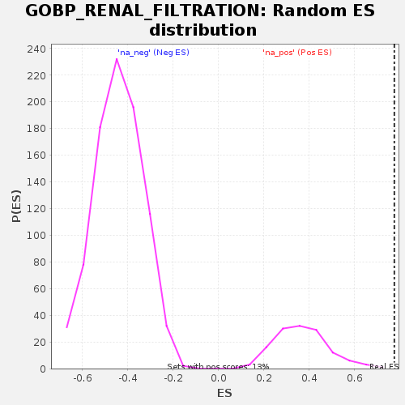

Profile of the Running ES Score & Positions of GeneSet Members on the Rank Ordered List
| Dataset | GEP4_vs_GEP6_residuals |
| Phenotype | NoPhenotypeAvailable |
| Upregulated in class | na_pos |
| GeneSet | GOBP_RENAL_FILTRATION |
| Enrichment Score (ES) | 0.77586615 |
| Normalized Enrichment Score (NES) | 2.0979178 |
| Nominal p-value | 0.0 |
| FDR q-value | 0.0035652253 |
| FWER p-Value | 0.023 |
| SYMBOL | RANK IN GENE LIST | RANK METRIC SCORE | RUNNING ES | CORE ENRICHMENT | |
|---|---|---|---|---|---|
| 1 | JCHAIN | 1 | 0.005 | 0.4371 | Yes |
| 2 | IGHA1 | 7 | 0.003 | 0.7079 | Yes |
| 3 | IGHA2 | 53 | 0.001 | 0.7759 | Yes |
| 4 | GAS6 | 379 | 0.000 | 0.7109 | No |
| 5 | TMEM63C | 560 | -0.000 | 0.6757 | No |
| 6 | GJA5 | 1071 | -0.000 | 0.5776 | No |
| 7 | SULF1 | 1138 | -0.000 | 0.5691 | No |
| 8 | EDNRA | 1355 | -0.000 | 0.5317 | No |
| 9 | ADGRF5 | 1538 | -0.000 | 0.5024 | No |
| 10 | MCAM | 1973 | -0.000 | 0.4249 | No |
| 11 | CD34 | 2029 | -0.000 | 0.4240 | No |
| 12 | EDN1 | 2221 | -0.000 | 0.3971 | No |
| 13 | PDGFB | 2522 | -0.000 | 0.3506 | No |
| 14 | RHPN2 | 2625 | -0.000 | 0.3447 | No |
| 15 | AQP1 | 2672 | -0.000 | 0.3505 | No |
| 16 | KIRREL1 | 2790 | -0.000 | 0.3431 | No |
| 17 | ITGA3 | 3143 | -0.000 | 0.2922 | No |
| 18 | SULF2 | 3431 | -0.000 | 0.2577 | No |
| 19 | PTPRO | 3685 | -0.000 | 0.2334 | No |
| 20 | CYBA | 3906 | -0.000 | 0.2195 | No |
